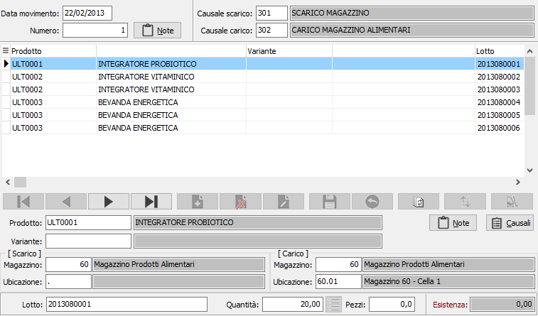
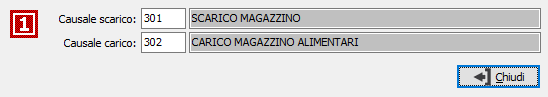
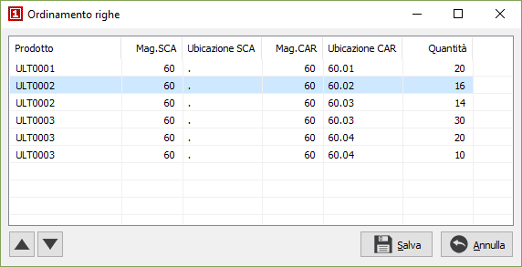

Trasferimento ubicazioni
Nella normale attività di un azienda è frequente la necessità di trasferire i prodotti da un magazzino ad un altro e da ubicazione ad un'altra.
Questa procedura guida l’utente nella procedura di trasferimento fra una locazione ed un'altra (anche su magazzini diversi), fornendo anche una funzione di ricerca delle locazioni valide. All’atto del salvataggio vengono generati i movimenti di magazzino di trasferimento.
La maschera video è articolata su tre sezioni: la sezione superiore visualizza i dati generali di testata del movimento quali data, protocollo e causali da applicare a tutte le righe; la sezione inferiore visualizza il pannello di input mentre la griglia della sezione superiore visualizza le righe inserite.

Dati di testa
DATA MOVIMENTO: data di registrazione del movimento. Viene proposta la data di sistema, modificabile a cura dell’utente. Operando un doppio clic sul campo, viene richiamata la finestra video di ricerca movimenti di trasferimento.
NUMERO: campo numerico che contiene il numero progressivo del movimento. Viene proposto in base alla tabella protocolli. E’ modificabile dall’utente.
PULSANTE NOTE: consente l'inserimento di un campo note su più righe per inserire una eventuale descrizione aggiuntiva del movimento.
CASUALI: rappresentano le causali, rispettivamente di scarico e carico, che saranno utilizzate per generare i movimenti di magazzino di trasferimento. Vengono proposte le causali inserite in configurazione magazzino e vengono riportate automaticamente sulle righe del movimento dove sono comunque modificabili. Sul campo sono attive le funzioni di ricerca (F9).
Righe movimento
PRODOTTO: campo alfanumerico per inserire il codice dell’articolo che si intende utilizzare. Il campo è attivo solo per i tipi di rigo che prevedono l'accesso al prodotto. Sul campo sono attive le funzioni di ricerca (F9). Sul campo è attivo il tasto F11 che come il pulsante Generazione automatica consente di generare le righe del movimento dalle giacenze per magazzino.
NOTE: bottone che abilita un campo annotazioni, relative al rigo attivo, che verranno riportate in stampa.
PULSANTE CAUSALI: pulsante che abilita l'accesso alle causali di magazzino utilizzate per generare il movimento relativo al rigo corrente; consente la modifica delle causali impostate in automatico come quelle riportate sulla testa del movimento.

VARIANTE: campo abilitato solo se attiva la gestione varianti ed il prodotto gestisce le varianti; codice della variante da movimentare. Sul campo sono attive le funzioni di ricerca (F9).
MAGAZZINO DI SCARICO: campo obbligatorio: codice del magazzino da cui sarà scaricato il prodotto. Sul campo sono attive le funzioni di ricerca (F9).
UBICAZIONE DI SCARICO: campo obbligatorio: codice dell'ubicazione da cui sarà scaricato il prodotto. Sul campo sono attive le funzioni di ricerca (F9) .
MAGAZZINO DI CARICO: campo obbligatorio: codice del magazzino in cui sarà caricato il prodotto. Sul campo sono attive le funzioni di ricerca (F9).
UBICAZIONE DI CARICO: campo obbligatorio: codice dell'ubicazione in cui sarà caricato il prodotto. Sul campo sono attive le funzioni di ricerca (F9) .
LOTTO: campo abilitato solo se attiva la gestione lotti ed il prodotto gestisce i lotti; codice del lotto da movimentare. Sul campo sono attive le funzioni di ricerca (F9).
QUANTITÀ: campo numerico per inserire la quantità di prodotto in unità di misura principale da trasferire.
PEZZI: campo numerico che indica la seconda quantità del movimento, se attivato da configurazione.
Nella finestra video è possibile scorrere le righe del movimento, visualizzando quello attivo nel pannello di input, tramite i tasti CTRL+freccia giù e CTRL+freccia su. Un rigo di movimento visualizzato nel pannello di input può essere eliminato, ancorchè privo di trattamenti successivi, premendo il bottone Elimina della barra strumenti del pannello di input; è possibile inserire un rigo vuoto immediatamente successivo al rigo attivo premendo il bottone Nuovo della barra strumenti del pannello di input.
 Tramite il pulsante Ordina è possibile modificare l'ordinamento delle righe del movimento spostandole singolarmente tramite gli appositi tasti di scorrimento oppure selezionando e trascinando le singole righe. La pressione sul pulsante Salva determina la modifica effettiva dell'ordinamento.
Tramite il pulsante Ordina è possibile modificare l'ordinamento delle righe del movimento spostandole singolarmente tramite gli appositi tasti di scorrimento oppure selezionando e trascinando le singole righe. La pressione sul pulsante Salva determina la modifica effettiva dell'ordinamento.
